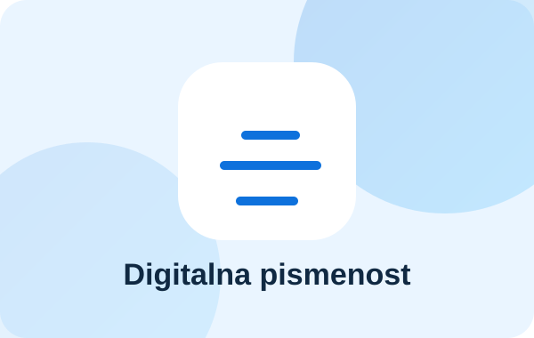
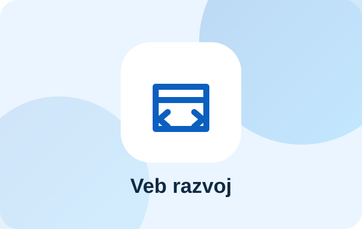
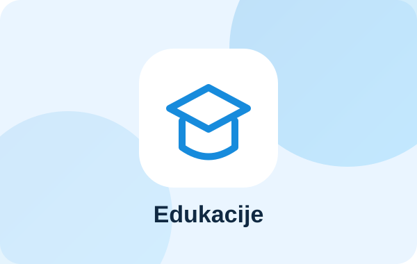

Obrazovni program
Digitalna pismenost za sve
Praktične radionice za sigurnije i kvalitetnije korišćenje računara, interneta i digitalnih servisa.
Udruženje „Микиликс веб развој“ povezuje obrazovanje, nauku i savremene tehnologije kroz edukacije, razvoj veb rešenja, digitalne projekte i saradnju od javnog interesa.

Udruženje je osnovano radi unapređenja obrazovanja i vaspitanja, nauke, informatičke i digitalne pismenosti, razvoja i primene informacionih tehnologija, stručnog usavršavanja građana i razvoja digitalnog društva.
Programske oblasti zasnovane su na ciljevima i aktivnostima navedenim u Statutu udruženja.
Kursevi, radionice, seminari, stručni skupovi, predavanja i drugi oblici učenja za decu, mlade i odrasle.
Saznajte više →Razvoj praktičnih digitalnih veština, informatičke pismenosti i bezbedne primene savremenih alata.
Saznajte više →Izrada, razvoj i održavanje internet prezentacija, platformi, aplikacija i edukativnih digitalnih sadržaja.
Pogledajte portfolio →Prikupljanje, analiza i objavljivanje podataka i rezultata važnih za obrazovanje, nauku i digitalni razvoj.
Istražite sadržaje →Priprema i realizacija domaćih i međunarodnih projekata, priručnika, biltena i elektronskih publikacija.
Naši projekti →Stručna i savetodavna saradnja sa ustanovama, organizacijama, udruženjima, privredom i građanima.
Pokrenite saradnju →Razgovaramo sa zajednicom, ustanovama i partnerima o konkretnim obrazovnim i digitalnim izazovima.
Definišemo ciljeve, aktivnosti, učesnike, potrebne resurse i merljive rezultate.
Sprovodimo obuke, projekte, razvoj digitalnih rešenja, istraživanja ili objavljivanje materijala.
Objavljujemo rezultate, unapređujemo program i podstičemo dalju primenu stečenih znanja.
Predložene celine koje mogu da predstavljaju aktuelne i buduće projekte udruženja.

Praktične radionice za sigurnije i kvalitetnije korišćenje računara, interneta i digitalnih servisa.

Podrška u izradi prezentacija, platformi, formi i digitalnih procesa koji olakšavaju rad organizacija.

Programi usmereni na savremene nastavne metode, digitalne alate, programiranje i razvoj kompetencija.
Prostor za logotipe obrazovnih ustanova, institucija, kompanija, udruženja i organizacija sa kojima se realizuju aktivnosti.
Na Skupštini održanoj u Kragujevcu usvojen je novi Statut kojim su proširene oblasti rada i ciljevi.
Pogledajte dokument →Na sajtu je dostupna online forma za građane koji prihvataju ciljeve i Statut udruženja.
Popunite pristupnicu →Ovaj prostor je namenjen objavljivanju narednih kurseva, radionica, seminara i drugih aktivnosti.
Pogledajte programe →Osnovni odgovori zasnovani na Statutu. Za posebna pitanja obratite se udruženju.
Postavite pitanje